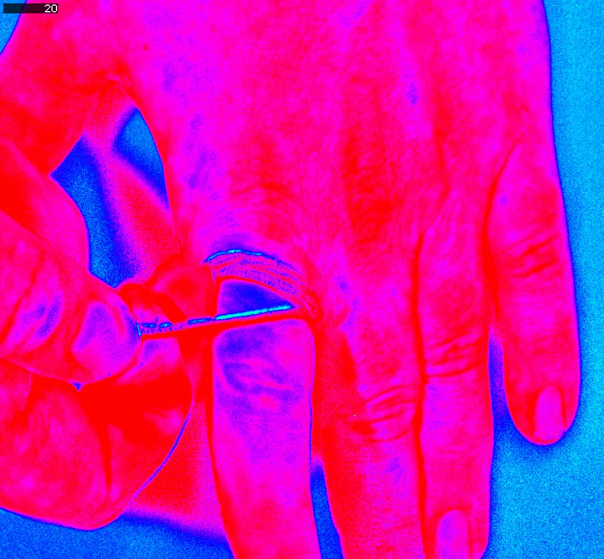

Status: Needs Review
This page has not been reviewed for accuracy and completeness. Content may be outdated or contain errors.
Runnable scripts live in cuvis-ai-cookbook
The Python scripts referenced below are in the cuvis-ai-cookbook repo. Clone it alongside this repo and run the commands from there.
Tutorial: Blood Perfusion Visualization with NDVI¶
This tutorial takes a hyperspectral CU3S session of a hand and builds a blood-perfusion video by applying a Normalized Difference Vegetation Index (NDVI) projection between a near-infrared (NIR) band and a visible "red" band. The same NDVI idea that flags chlorophyll in plants flags haemoglobin in tissue — high NDVI means more blood in the optical path (perfusion), not necessarily oxygenated blood.
We build a three-node cuvis-ai pipeline:
A final advanced section (§8) extends the pipeline with custom nodes to add a qualitative SpO2 proxy on top of the perfusion result.
Run this as a notebook
This page mirrors the live notebook at notebooks/use_cases/blood_perfusion.ipynb. Open it in JupyterLab or VS Code to follow along section-for-section with editable cells.
Overview¶
What You'll Learn:
- Loading hyperspectral data from
.cu3sfiles withCU3SDataNode - Computing the normalized difference index for blood perfusion with
NDVISelector - Wiring nodes together with
pipeline.connect((source, target), …) - Sanity-checking a single frame before a full sweep with
Predictor.predict(collect_outputs=True) - Writing the result to MP4 with
ToVideoNode - Extending the framework with custom nodes (
SpO2RatioSelector,BloodHealthMaskNode)
Time: ~30 minutes (most of which is the dataset download and the full-frame sweep).
Perfect for: Users who want to learn pipeline construction through a real-world hyperspectral visualization workflow, and who want a worked example of dropping custom Node subclasses into a graph alongside the built-ins.
Just want to run it?
Skip ahead to Running the example to execute the script directly.
Prerequisites¶
Install cuvis-ai. See the Installation Guide for the full setup — supported on Linux, macOS, and Windows.
Concepts to be familiar with:
- Node System — what a
Nodeis and howINPUT_SPECS/OUTPUT_SPECSdefine ports. - Pipeline Lifecycle — train-then-predict, execution stages.
Dataset: the XMR Blood Perfusion session is downloaded automatically by §1 below, but you can also pre-fetch it from the repo root:
1. Fetch the dataset¶
The XMR Blood Perfusion session (~11 GB) lives on Hugging Face Hub. The notebook checks for the file and downloads via PublicDatasets.download_dataset if missing — equivalent to running uv run dataset download blood_perfusion from a terminal.
from pathlib import Path
from loguru import logger
from cuvis_ai_core.data.public_datasets import PublicDatasets
dataset_dir = Path("../../data")
cu3s_file_path = dataset_dir / "XMR_Blood_Perfusion" / "Auto_005.cu3s"
if not cu3s_file_path.exists():
logger.info("CU3S not found at {}. Downloading…", cu3s_file_path)
dataset_dir.mkdir(parents=True, exist_ok=True)
ok = PublicDatasets.download_dataset(
"blood_perfusion",
download_path=str(dataset_dir),
force=False,
)
if not ok or not cu3s_file_path.exists():
raise FileNotFoundError(
f"Dataset download failed. Expected {cu3s_file_path}. "
"Try running `uv run dataset download blood_perfusion` manually."
)
logger.success("CU3S ready: {}", cu3s_file_path)
2. What is NDVI?¶
NDVI — Normalized Difference Vegetation Index — was invented in the 1970s to map healthy vegetation from satellite imagery. It is a pixel-wise contrast between two wavelength bands, chosen to exploit how chlorophyll behaves with light:
- Red (\(\approx 620\)–\(680\) nm): the red end of the visible spectrum. Chlorophyll absorbs heavily here, so green leaves reflect very little red light.
- Near-infrared (NIR) (\(\approx 760\)–\(900\) nm): just past the red end of visible — the eye can't see it. Internal leaf scattering makes vegetation a strong NIR reflector.
(For orientation: visible light covers \(\approx 380\)–\(740\) nm; NIR runs from there out to \(\approx 1400\) nm. Both are easily within reach of a Cubert hyperspectral camera.)
A pixel of healthy vegetation therefore has a big gap between \(R_{\mathrm{NIR}}\) and \(R_{\mathrm{Red}}\). The contrast is normalized so the index does not depend on overall brightness:
where \(R_{\mathrm{NIR}}(x, y)\) and \(R_{\mathrm{Red}}(x, y)\) are the per-pixel reflectance values — the fraction of incident light returned by the surface, in \([0, 1]\) — sampled from the hyperspectral cube by nearest-wavelength match to NIR_NM and RED_NM.
NDVI itself is bounded in \([-1, +1]\), with rough rules of thumb on satellite imagery:
- \(+0.6\) to \(+0.9\) — dense, healthy vegetation
- \(\approx 0\) — bare soil, rocks, dead plants
- \(< 0\) — water, snow, clouds
Why we use it for blood perfusion. Same idea, different chromophore. Swap chlorophyll for haemoglobin and re-pick the bands: at NIR \(\approx 750\) nm tissue is fairly transparent, while at the visible band \(\approx 566\) nm both oxy- and deoxy-haemoglobin absorb strongly. The index is then dominated by how much haemoglobin sits in the optical path — i.e. blood volume — so pixels with more blood drive NDVI up. That is a perfusion signal.
This is not a clean oxygenation (SpO2) measurement. An isosbestic point is a wavelength where oxy-haemoglobin and deoxy-haemoglobin absorb equally; the signal there reflects total haemoglobin and is blind to its oxygenation state. Visible-light isosbestics for haemoglobin sit at \(\approx 545\), \(570\), and \(584\) nm, with another in the NIR around \(800\) nm. 566 nm sits near the \(\sim 570\) nm one but not exactly on it, so the index couples only weakly to oxygenation; isolating SpO2 requires a different wavelength choice and a multi-band model (we sketch that in §8).
NDVISelector resolves each of nir_nm / red_nm to the nearest sensor wavelength, computes NDVI for every pixel of every frame, and maps the result to an RGB frame via an HSV-style colormap. colormap_min / colormap_max clip the ends of the scale.
3. Tutorial configuration¶
Each knob below is safe to edit.
NIR_NM/RED_NM— the two wavelengths NDVI differences over. The 750 / 566 nm pair is tuned for haemoglobin contrast (see §2).COLORMAP_MIN/COLORMAP_MAX— NDVI values below/above these saturate to the colormap's endpoints. Tighten the range to exaggerate small contrasts.TOTAL_FRAMES— known length of the XMR Blood Perfusion session (568 frames).N_FRAMES— how many frames to process. Drop to 20 for a fast first run.FRAME_RATE— output video FPS.FRAME_ROTATION— degrees to rotate each frame (e.g. 90, 180) orNone.
NIR_NM = 750.0
RED_NM = 566.0
COLORMAP_MIN = -0.7
COLORMAP_MAX = 0.5
TOTAL_FRAMES = 568
N_FRAMES = TOTAL_FRAMES
FRAME_RATE = 15.0
FRAME_ROTATION: int | None = None
output_dir = Path("./output/blood_perfusion")
output_video_path = output_dir / "ndvi_projection.mp4"
output_dir.mkdir(parents=True, exist_ok=True)
4. Build the pipeline¶
Three nodes, four connections:
CU3SDataNodeunpacks each batch of CU3S measurements into a[B, H, W, C]float cube plus the 1-D wavelength vector.NDVISelectorconsumes the cube and wavelengths, emits a colour-mappedrgb_imageplus the rawindex_image.ToVideoNodewrites the RGB frames to an MP4, usingframe_id(the measurement index) as an on-screen overlay.
from cuvis_ai.node.channel_selector import NDVISelector
from cuvis_ai.node.data import CU3SDataNode
from cuvis_ai.node.video import ToVideoNode
from cuvis_ai_core.pipeline.pipeline import CuvisPipeline
pipeline = CuvisPipeline("BloodPerfusion_NDVI_Projection")
cu3s_data = CU3SDataNode(name="cu3s_data")
ndvi = NDVISelector(
nir_nm=NIR_NM,
red_nm=RED_NM,
colormap_min=COLORMAP_MIN,
colormap_max=COLORMAP_MAX,
name="ndvi",
)
to_video = ToVideoNode(
output_video_path=str(output_video_path),
frame_rate=FRAME_RATE,
frame_rotation=FRAME_ROTATION,
name="to_video",
)
pipeline.connect(
(cu3s_data.outputs.cube, ndvi.cube),
(cu3s_data.outputs.wavelengths, ndvi.wavelengths),
(ndvi.rgb_image, to_video.rgb_image),
(cu3s_data.outputs.mesu_index, to_video.frame_id),
)
The tuple pattern
(source.outputs.port, target.port) is the fundamental building block of every cuvis-ai pipeline connection.
flowchart LR
cu3s_data[cu3s_data<br/>CU3SDataNode]
ndvi[ndvi<br/>NDVISelector]
to_video[to_video<br/>ToVideoNode]
cu3s_data -->|cube --> cube| ndvi
cu3s_data -->|wavelengths --> wavelengths| ndvi
cu3s_data -->|mesu_index --> frame_id| to_video
ndvi -->|rgb_image --> rgb_image| to_video5. Sanity-check on a single frame¶
Before committing to the full 568-frame sweep, render exactly one frame end-to-end so we can verify wavelengths, colormap, orientation, and overall sanity in seconds. Set PREVIEW_FRAME_ID to whichever frame you want to inspect, then point a fresh SingleCu3sDataModule at just that index. With collect_outputs=True, Predictor.predict captures the rendered RGB tensor in a list of dicts keyed by (node_name, port_name), which we plot inline.
Note
The main pipeline still includes ToVideoNode, so this run writes a one-frame .mp4 to output_video_path. §6 overwrites it on the full sweep.
import matplotlib.pyplot as plt
import torch
from cuvis_ai_core.data.datasets import SingleCu3sDataModule
from cuvis_ai_core.training import Predictor
PREVIEW_FRAME_ID = 200
preview_datamodule = SingleCu3sDataModule(
cu3s_file_path=str(cu3s_file_path),
processing_mode="Reflectance",
batch_size=1,
predict_ids=[PREVIEW_FRAME_ID],
)
pipeline.to(torch.device("cpu"))
preview_predictor = Predictor(pipeline=pipeline, datamodule=preview_datamodule)
preview_outputs = preview_predictor.predict(collect_outputs=True)
# Pull frame's RGB out of the (node_name, port_name) keyed dict
preview_rgb = preview_outputs[0][("ndvi", "rgb_image")][0].cpu().numpy()
plt.figure(figsize=(8, 6))
plt.imshow(preview_rgb)
plt.title(f"NDVI — frame {PREVIEW_FRAME_ID}")
plt.axis("off")
plt.show()

6. Run the pipeline¶
Predictor.predict iterates batches from the SingleCu3sDataModule and pushes each one through the connected pipeline. max_batches=N_FRAMES caps the run; collect_outputs=False tells the predictor to discard per-batch tensors after ToVideoNode has written them — important for memory on the full 568-frame sweep.
datamodule = SingleCu3sDataModule(
cu3s_file_path=str(cu3s_file_path),
processing_mode="Reflectance",
batch_size=1,
predict_ids=None,
)
pipeline.to(torch.device("cpu"))
predictor = Predictor(pipeline=pipeline, datamodule=datamodule)
predictor.predict(max_batches=N_FRAMES, collect_outputs=False)
if not output_video_path.exists():
raise RuntimeError(f"Expected output video was not created: {output_video_path}")
logger.success("NDVI export complete: {}", output_video_path)
7. Watch the result¶
When the sweep finishes, output_video_path (e.g. ./output/blood_perfusion/ndvi_projection.mp4) holds the final video. In the notebook this is embedded inline:
from IPython.display import Video, display
display(Video(str(output_video_path), embed=False, width=640))
Outside the notebook, open the MP4 with any video player. A still frame from the result looks like:
8. Advanced: extending the framework with custom nodes¶
Advanced section. Everything above used only stock cuvis-ai nodes. The framework is designed to be extended — any class that follows the Node contract (port INPUT_SPECS / OUTPUT_SPECS plus a forward() method) drops straight into a CuvisPipeline.connect(...) graph alongside the built-ins. We demonstrate by adding a qualitative SpO2 proxy on top of the perfusion pipeline.
The cleanest answer to "is this blood oxygenated?" is Beer-Lambert linear unmixing across ≥3 wavelengths. The simpler 2-band version mirrors the NDVI trick on a wavelength pair chosen for oxy/deoxy contrast:
deoxy_nm≈ 760 nm — strong deoxy-Hb peak; oxy-Hb barely absorbs.oxy_nm≈ 577 nm — β peak of oxy-Hb.
Computing \((R_\mathrm{deoxy} - R_\mathrm{oxy}) / (R_\mathrm{deoxy} + R_\mathrm{oxy})\) produces an index that moves up with oxygenation. Honest caveat: it still couples to blood volume and pigmentation — not a calibrated SpO2.
Two custom nodes do the work:
SpO2RatioSelector— extendsNDVISelectorand reuses its normalized-difference machinery; only the parameter names and defaults change.BloodHealthMaskNode— freshNodethat multiplies a colormapped RGB by a soft mask derived from the perfusion index, so SpO2 colour only shows up inside vessels.
The full pipeline forks the cube into both selectors, feeds the perfusion index (raw scalar, before colormap) as a mask, and gates the SpO2 colormap with it before writing a second video:
┌─► NDVISelector ─── index_image ──┐
CU3SDataNode ──────┤ │
└─► SpO2RatioSelector ─ rgb_image ─┴─► BloodHealthMaskNode ──► ToVideoNode
Custom node definitions¶
from typing import Any
import torch
from cuvis_ai_schemas.pipeline import PortSpec
from cuvis_ai.node.channel_selector import NDVISelector
from cuvis_ai_core.node import Node
class SpO2RatioSelector(NDVISelector):
"""Two-band SpO2 proxy: NDVI applied on a (deoxy, oxy) wavelength pair."""
def __init__(
self,
deoxy_nm: float = 760.0,
oxy_nm: float = 577.0,
**kwargs: Any,
) -> None:
kwargs.setdefault("colormap_min", -0.3)
kwargs.setdefault("colormap_max", 0.3)
super().__init__(nir_nm=deoxy_nm, red_nm=oxy_nm, **kwargs)
class BloodHealthMaskNode(Node):
"""Multiply an RGB image by a soft mask derived from a scalar perfusion index."""
INPUT_SPECS = {
"rgb_image": PortSpec(dtype=torch.float32, shape=(-1, -1, -1, 3)),
"perfusion_index": PortSpec(dtype=torch.float32, shape=(-1, -1, -1, 1)),
}
OUTPUT_SPECS = {
"rgb_image": PortSpec(dtype=torch.float32, shape=(-1, -1, -1, 3)),
}
def __init__(self, mask_low: float = -0.1, mask_high: float = 0.2, **kwargs: Any) -> None:
super().__init__(mask_low=float(mask_low), mask_high=float(mask_high), **kwargs)
self.mask_low = float(mask_low)
self.mask_high = float(mask_high)
def forward(
self,
rgb_image: torch.Tensor,
perfusion_index: torch.Tensor,
**_: Any,
) -> dict[str, torch.Tensor]:
"""Soft-mask an RGB image by a scalar perfusion index in [mask_low, mask_high]."""
span = self.mask_high - self.mask_low
mask = ((perfusion_index - self.mask_low) / span).clamp(0.0, 1.0)
return {"rgb_image": rgb_image * mask}
Building the advanced pipeline¶
advanced_output_path = output_dir / "spo2_proxy_masked.mp4"
advanced_pipeline = CuvisPipeline("BloodPerfusion_SpO2_Masked")
adv_cu3s = CU3SDataNode(name="cu3s_data")
adv_perfusion = NDVISelector(
nir_nm=NIR_NM,
red_nm=RED_NM,
colormap_min=COLORMAP_MIN,
colormap_max=COLORMAP_MAX,
name="perfusion",
)
adv_spo2 = SpO2RatioSelector(deoxy_nm=760.0, oxy_nm=577.0, name="spo2_proxy")
adv_mask = BloodHealthMaskNode(mask_low=-0.1, mask_high=0.2, name="health_mask")
adv_video = ToVideoNode(
output_video_path=str(advanced_output_path),
frame_rate=FRAME_RATE,
frame_rotation=FRAME_ROTATION,
name="to_video",
)
advanced_pipeline.connect(
(adv_cu3s.outputs.cube, adv_perfusion.cube),
(adv_cu3s.outputs.wavelengths, adv_perfusion.wavelengths),
(adv_cu3s.outputs.cube, adv_spo2.cube),
(adv_cu3s.outputs.wavelengths, adv_spo2.wavelengths),
(adv_perfusion.index_image, adv_mask.perfusion_index),
(adv_spo2.outputs.rgb_image, adv_mask.inputs.rgb_image),
(adv_mask.outputs.rgb_image, adv_video.rgb_image),
(adv_cu3s.outputs.mesu_index, adv_video.frame_id),
)
Preview a single frame and run the full sweep with the same Predictor.predict(...) pattern from §5 and §6 — only the pipeline= argument changes.
Pipeline persistence
These classes live only in the notebook. restore_pipeline and restore_trainrun deserialize nodes by class name through the cuvis-ai-core node registry, so a saved pipeline that references SpO2RatioSelector cannot be rehydrated elsewhere. To make custom nodes restoreable, package them as a plugin (loadable via NodeRegistry().load_plugin(...)) or contribute them to the cuvis-ai built-ins.
Troubleshooting¶
Port shape mismatch
Connecting [B, H, W, 61] to an input expecting [B, H, W, 1] fails. Always check that the output shape matches the input shape — the Port System page explains how shape inference works.
Wavelength out of range
NDVISelector resolves nir_nm and red_nm to the nearest sensor wavelength. If your camera doesn't cover the requested band, you'll silently get the closest available channel — verify your wavelength range matches the camera's spectral coverage before trusting the result.
Running the example¶
Set up the environment, download the dataset, and run the script:
uv sync --all-extras
uv run dataset download blood_perfusion
uv run python examples/blood_perfusion/nd_blood_perfusion.py \
--cu3s-path data/XMR_Blood_Perfusion/Auto_005.cu3s
The script accepts --help for a full list of options including frame range, frame rate, and colormap range.
To run the tutorial interactively instead, open the notebook at notebooks/use_cases/blood_perfusion.ipynb in JupyterLab or VS Code.